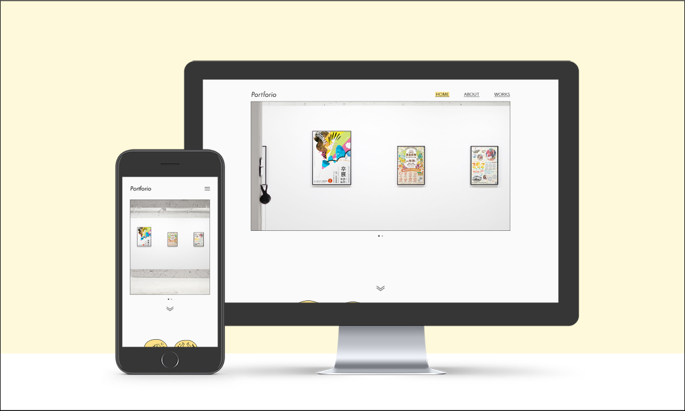

ポートフォリオサイト
ターゲット
・応募した企業の採用担当、社員の方々
コンセプト
・自分の大切にしていること、作品の傾向を伝える
サイトの概要
・ブランク機関が長い中の応募なので人柄などで「一緒に働きたい」と思ってもらえるかが重要
・第一に自分のスタンスを伝え、短い時間で印象づける
・掲載されている作品や説明が主要コンテンツなので閲覧の邪魔にならないような心地よい動き・余白の取り方を意識
制作のポイント
・自分の働く上でのスタンスをイラストを用いてキャッチーに
「それぞれの得意分野/役職を活かして助け合いたい」という自分の持っているイメージをRPGの勇者パーティをモチーフに。
・全体的に線と堅すぎない無彩色を意識してシンプルにまとめる
アクセントカラーとしてマーカーペンをイメージした黄色を使用してメリハリを付けた。